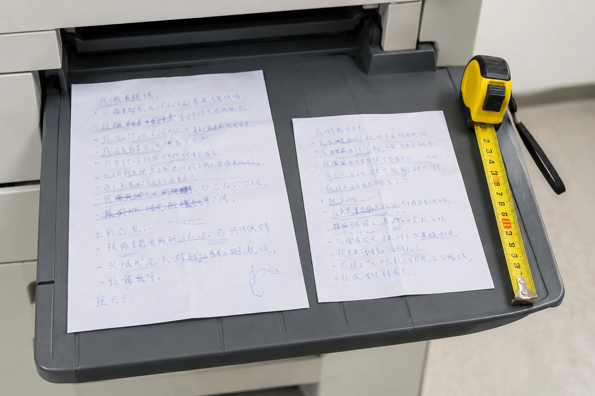

北京笔迹鉴定资料里的复印缩放比例，目录上该不该注明
复印机可能将原页放大或缩小。页面内容仍然齐全，尺寸关系却已经变了，比较前最好先确认复制时的设置。

先确认是不是等比例复制
北京笔迹鉴定资料交接时，能够查到复印比例就一并记录。没有记录时，不必根据纸张型号推定一定是原尺寸：同样的A4纸也可能承载缩小后的内容。原件照片、复印件和扫描图应分别标注，尤其不要把屏幕上显示得一样大的两张图直接当成同尺度材料。
留住可以核对的参照
模仿笔迹参考应尽量保留完整纸面及格线。页边、印刷栏位可以帮助定位，但前提是知道它们原来的尺寸。相同内容出现于不同版本时，先建立对应页码，再说明哪些版本经过缩放。仅仅把两个字调到同宽，会掩盖本来需要观察的比例关系。
署名长度不能靠截图估算
模仿签名、模仿签字局部如果取自复印图，应能追溯到完整页面。裁切和缩放叠加之后，截图中的姓名长度不再能直接代表原始尺寸。没有可靠参照时，可以记录相对结构，绝对长度留待核实，不用显示器上量出的数值代替原件信息。
副本与原件身份分开
版本表中写清文件编号、来源和已知复制设置，后来补到原件再追加对应关系。不同尺寸的副本仍可能来自同一次书写，不能把它们计为多份独立样本。整理记录准确，后续沟通才不会把复印变化误当成自然书写波动。